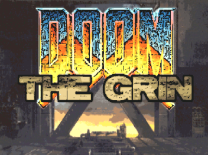
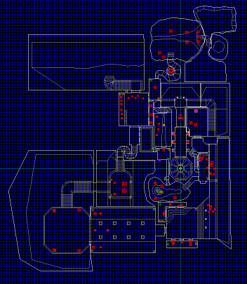

THE GRIN


The Grin is a Doom2 episode I created in 2010 to work on my level design skills.
I promise I'll add the full story of this level set and its design rationale and such, for now I'll just say the whole thing was created in a month's time and everything I made after version 0.9.0 was bug fixing to adapt to new versions of the various Doom ports I tested it on (for example, on most recent versions of GZDoom I found a secret passage broke because the space to pass through it became too narrow, I guess it was a rounding issue of some kind, which is why you have a 0.9.5 version made 7 years after the original).
System Requirements
Any modern Doom port should do, but you need to have the original game data (you can find the game on GOG or Steam at a very low price nowadays):
- Doom2 (doom2.wad)
- needed to run the levels at all.
- Doom (doom.wad)
- needed to get the proper background music for some levels (I mixed up the original section a bit to get the right mood).
I'm assuming you know how to launch Doom with some extra files or have a loader in place, but here's a couple examples from my Linux box ($PATH_IWADS being a directory where you have both the original Doom WADS), launched from the directory where you unpack the zips:
- ZDoom
- zdoom -wnd -iwad $PATH_IWADS -game TheGrin -file graphtx3.wad GrinMusicSel.wad nb_flats.wad NB_RECOL.WAD q1tex.wad TheGrin-0.9.5.wad
- Doomsday
- doomsday -wnd -iwad $PATH_IWADS -game doom2 -file graphtx3.wad GrinMusicSel.wad nb_flats.wad NB_RECOL.WAD q1tex.wad TheGrin-0.9.5.wad
>
Files
- The Grin WAD
- the levels I made, from MAP01 to MAP09
- Support WADs
- the external WAD files I used for textures and such, so you don't have to hunt them down yourselves. I take no credit for anything you find in here, of course.
Bonus Tracks
Some YouTube links the music I was listening to while making the levels.
Barren Earth in particular would have been the soundtrack to the second half of the levels if I didn't go for the retro midi feel. I envisioned most of the levels structure and feel drawing from the atmosphere of this album.